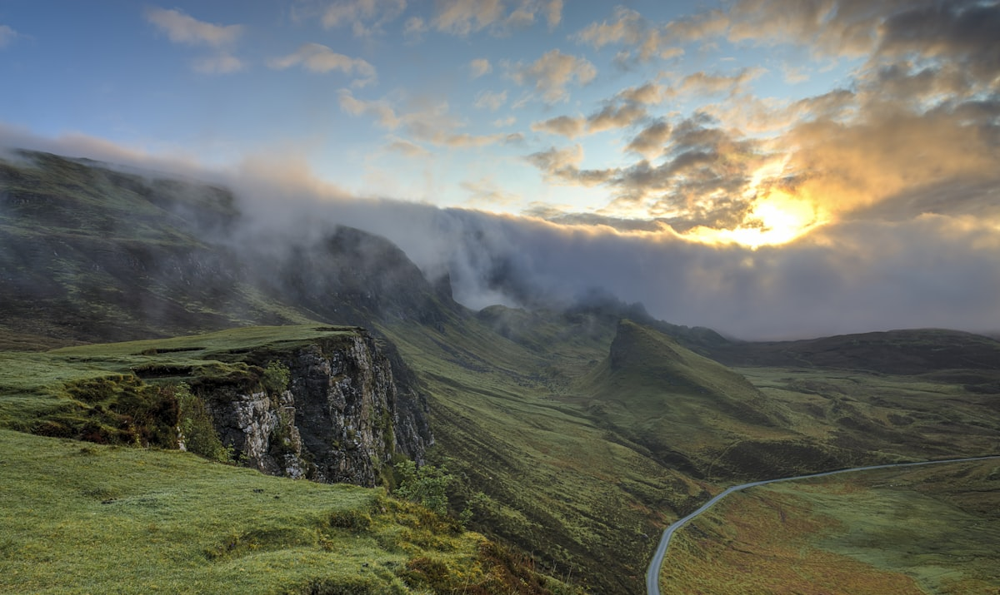
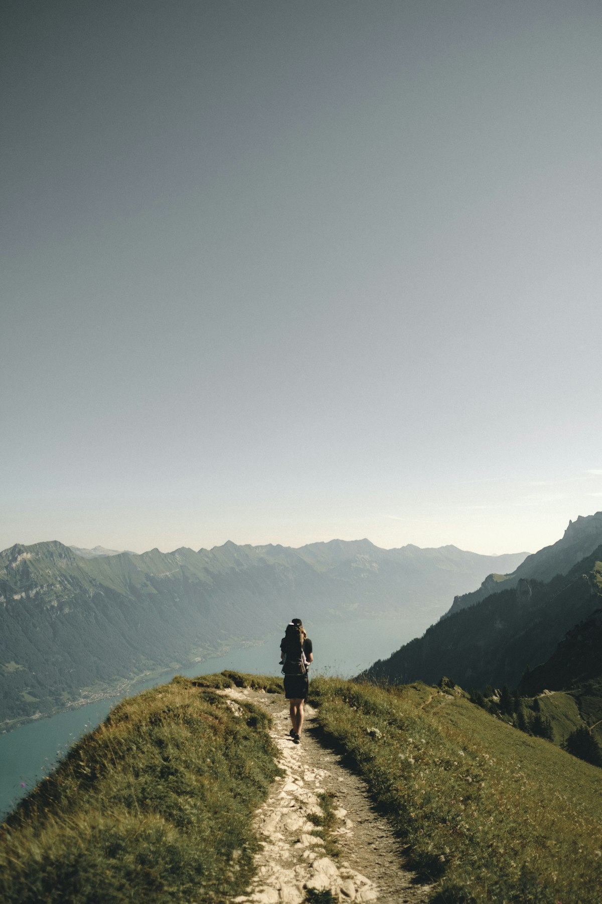

Summit · Hard
Sunrise Summit Trail
A 4 a.m. start, 1,200 m of climbing, and the best sunrise of my life. Full video on TikTok.

Lake · Easy
Mirror Lake Loop
8 km loop, almost flat, insanely photogenic. Perfect first hike for beginners.

Ridge · Moderate
High Ridge Traverse
Exposed ridgeline with views on both sides the entire way. Windy — bring layers.

Forest · Easy
Old Pine Forest
Golden-hour light beams through ancient pines. Best filmed in early autumn.

Valley · Moderate
Misty Valley Viewpoint
Above the clouds before 7 a.m. — the inversion here is unreal in spring.

Summit · Moderate
Sunset Peak
Short but steep evening hike. Time it right and you descend under a full sky of stars.

Summit · Hard
The Grand Overlook
The thumbnail hike — my most-viewed TikTok was filmed right here.